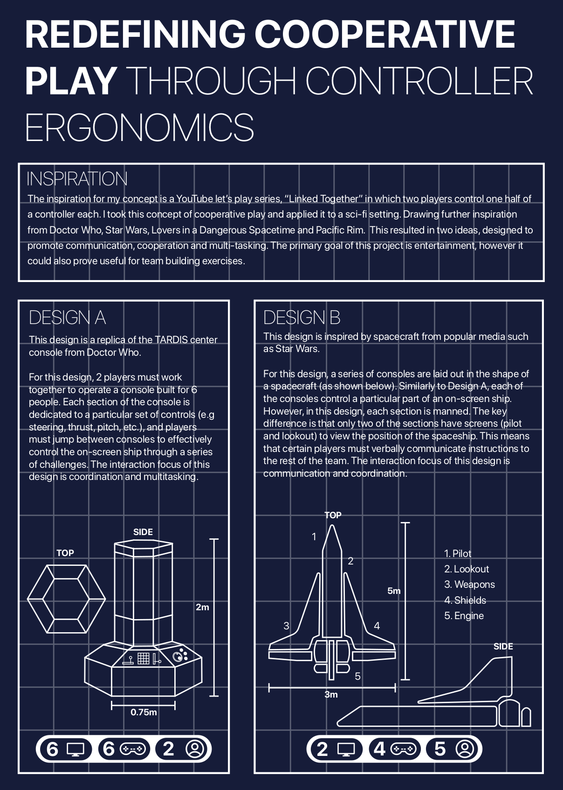
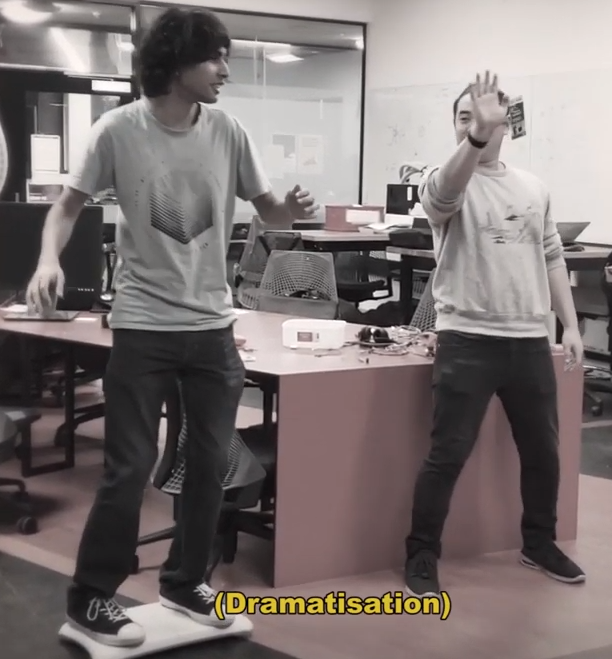
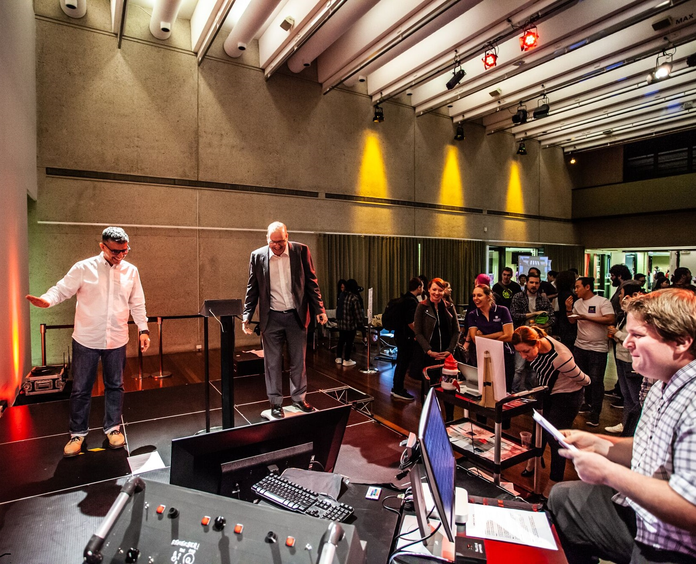
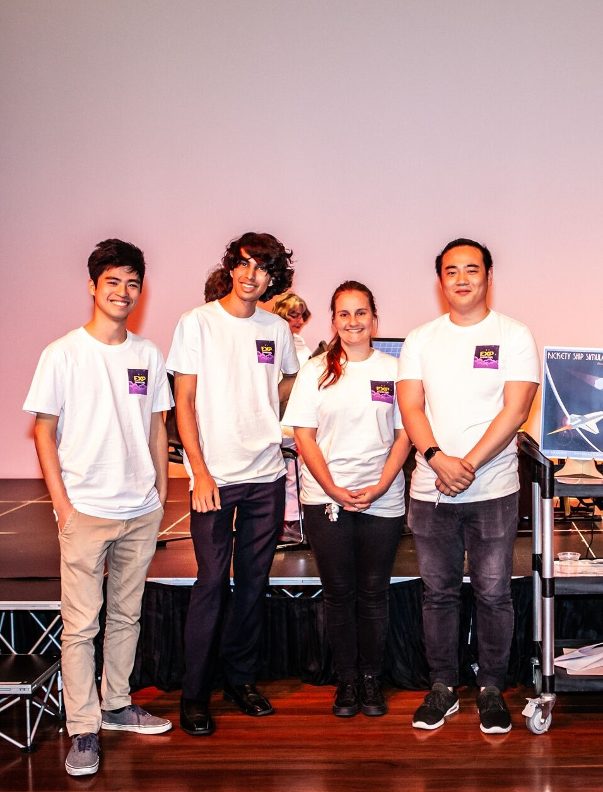

- concept
- roles
- interactions
- prototyping
- product
- evaluation

As with all good projects, Rickety Ship Simulator began in the ideation phase. We were tasked with creating a playful, physical interaction that facilitated shared experiences. Leading from Tom’s initial concept, we decided on creating a team-building experience to help inexperienced teams gain communication skills. Since our primary goal was to help our users learn, we started with research into the values of a good team – and how we can promote them through connected play. This meant looking at articles on teambuilding, statistics to help us justify and refine our userbase, and even some first-hand experience. For more in-depth information on the ideation phase, I’d recommend checking out my report or blog posts.
After some refinement, we decided that the game would take place with four players, each filling in their own role. Each role is unique and revolves around working with other people on the ship. The purpose of this was to create an experience where all players were individually valued. Each member has their own strengths and weaknesses, and must find a way to work together to achieve a common goal. Unlike other similar experiences like escape rooms, this approach is more parallel with a real-world situation. This should allow players to translate what they learn into their future teamwork. For more information on the game’s roles, check the learn more section below.
 While the roles must each maintain individuality, it’s also important that they all mesh together in a meaningful way. To achieve this, we created gameplay loops. These gameplay loops represented the various series of interactions that players would have to complete. We noticed many small loops, but mainly focused on one core gameplay loop, and one major loop. These were resource collection and system repair. By focussing on these interactions, we were able to create an experience where every player had a reason to communicate with another player at any given time.
While the roles must each maintain individuality, it’s also important that they all mesh together in a meaningful way. To achieve this, we created gameplay loops. These gameplay loops represented the various series of interactions that players would have to complete. We noticed many small loops, but mainly focused on one core gameplay loop, and one major loop. These were resource collection and system repair. By focussing on these interactions, we were able to create an experience where every player had a reason to communicate with another player at any given time.

Once a plan had been put in place for our player-player interactions, we needed to make sure that our physical interactions were also up to scratch. In order to this, we created a series of prototypes and completed an empirical evaluation. Through A/B testing we were able to determine the most effective ways for our interactions to be made. This involved running two methods against each-other (Such as Kinect-based controls and crank-based controls) to find out which was more intuitive and entertaining. The findings of these evaluations settled decisions for the product, and caused us to completely redevelop the concept for one of our roles. More information on testing can be found in my week 6 blog post.

With our plan set in motion, exhibit preparation was always a problem. Given the scope of our project, development took up a large amount of our time. Since fundamentally our concept relied on all four sections working together, it was important for each system to meet a certain level of functionality. Due to this, we worked towards completing our MVP as soon as possible. To do this, we each specialised in certain sections. Justin worked solely on the unity engine side of things, Mikaela worked on programming our microcontrollers, Tom mainly designed and put together the physical build, and I set up the Kinect, wii fit board, and worked on the unity game with a focus on interfacing with the many inputs our game received.

When it comes to function alone, I think we were able to accomplish a lot as a team. Sectioning things off was a huge help in getting work completed fast, but as we approached the deadline and bug-fixing became a priority, a need for more communication began to stall our progress. Furthermore, at showcase it became clear that we hadn’t put enough thought into the social aspects of our physical design (More on this in the learn more section). If more time had been put together brainstorming about this earlier on, I think the final product would have been far more successful.